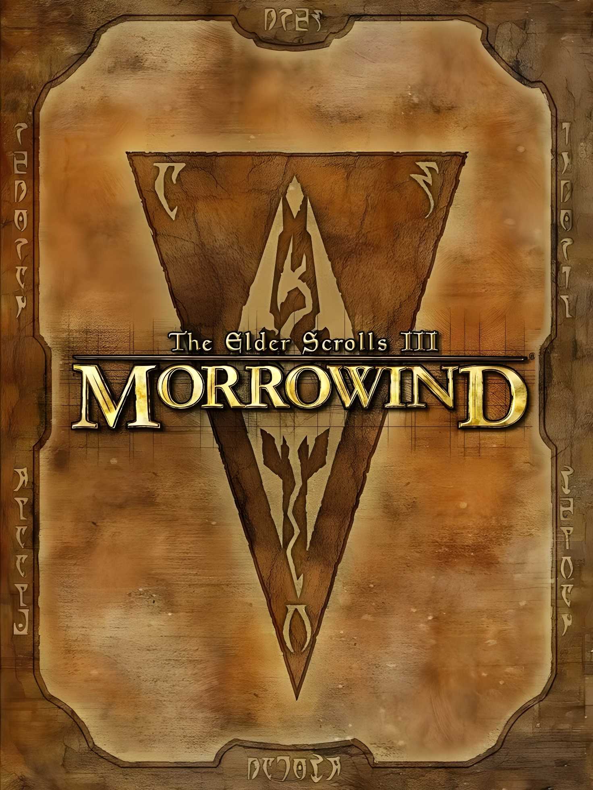
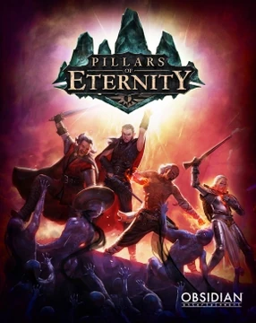

Sự Suy Tàn Của RPG Hiện Đại
Tôi sinh ra trong thời đại của đồ họa 4K, của Ray Tracing và những thế giới mở rộng hàng trăm cây số vuông. Nhưng trớ trêu thay, tôi luôn cảm thấy mình đang đứng trước những vỏ bọc hào nhoáng nhưng rỗng tuếch. Ngành game dường như đã quên mất câu hỏi khởi nguyên: 'Role-Playing Game là gì? Liệu có phải là chạy theo những con số sát thương nảy lên màn hình? Hay là đuổi theo một mũi tên chỉ đường vô hồn? Không. Với tôi, RPG là một giao ước thiêng liêng về sự Tưởng Tượng và Tin Tưởng giữa người tạo ra thế giới và người bước vào đó. Và hôm nay, tôi muốn kể cho bạn nghe về những kẻ cuối cùng còn giữ giao ước đó: Morrowind và Pillars of Eternity
|  |  |
Những "Công Viên Giải Trí" Hào Nhoáng
"Sự thật phũ phàng là đa phần RPG hiện đại dẫn bạn đi như một chuyến xe trong công viên giải trí: êm, đẹp, mượt, và hoàn toàn dễ quên. Bạn không khám phá, bạn tiêu thụ."
Hãy nhìn vào màn hình của một tựa game RPG hiện đại tiêu biểu. Bạn thấy gì? Một cái HUD (giao diện) chi chít biểu tượng. Một thanh máu sáng loá trên đầu kẻ địch. Một danh sách (checklist) nhiệm vụ dài dằng dặc bên góc trái và một mũi tên GPS luôn chỉ thẳng vào mặt bạn, nói rằng: 'Đi hướng này, đừng nghĩ ngợi gì cả
Họ gọi đó là 'Quality of Life' (Chất lượng cuộc sống), là sự tiện lợi. Nhưng với những người chơi khao khát sự đắm chìm (immersion) như tôi, đó là sự xúc phạm. Những tựa game ấy không tin tưởng người chơi. Chúng sợ bạn lạc đường, sợ bạn thất bại, sợ bạn chán nản nếu phải tự mình suy nghĩ. Kết quả là chúng ta có những thế giới đẹp như tranh vẽ, nhưng vô hồn như những mô hình nhựa. Bạn không 'sống' trong đó, bạn chỉ đi qua nó như một khách du lịch cưỡi ngựa xem hoa

Sự Tĩnh Lặng Của Tự Do
Rồi tôi tìm thấy Morrowind. Một tựa game hơn 20 năm tuổi, đồ họa thô sơ, chuyển động cứng nhắc.
Nhưng ngay khoảnh khắc bước xuống con tàu ở Seyda Neen, tôi biết mình đã tìm thấy 'nhà'.
Morrowind không cầm tay chỉ việc. Nó không nhồi nhét màn hình bằng marker hay pop-up hướng dẫn.
Nó chỉ ném tôi vào giữa một vùng đất xa lạ, đầy bụi đỏ và nấm khổng lồ, đưa cho tôi một cuốn nhật ký và nói: 'Tự tìm đường đi'.
Đó là sự tôn trọng tối thượng. Khi Morrowind bảo tôi: 'Hãy đi về phía Bắc, qua tảng đá hình đầu người, rẽ trái tại ngã ba sông',
nó buộc tôi phải quan sát, phải ghi nhớ, và phải thực sự nhìn ngắm thế giới xung quanh thay vì dán mắt vào bản đồ nhỏ (mini-map).
Để rồi khi tôi tìm thấy hang động cần tìm, đó không phải là do tôi đi theo một chấm đỏ trên bản đồ, mà là phần thưởng cho trí thông minh và sự kiên nhẫn của chính tôi."
Khi Chữ Viết Vẽ Nên Thế Giới
"Nếu Morrowind dạy tôi cách quan sát, thì Pillars of Eternity dạy tôi cách lắng nghe và tưởng tượng.
Mang trong mình dòng máu của kỷ nguyên Infinity Engine, Pillars hiểu rằng đồ họa chân thực nhất không nằm trên màn hình,
mà nằm trong tâm trí người chơi.
Game không vội vã. Nó yêu cầu tôi chậm lại. Những đoạn mô tả dài, những câu thoại đầy ẩn ý, những mảnh lore (cốt truyện) nằm rải rác trong từng cuốn sách,
từng bia đá. Nó không dựng sẵn những đoạn cắt cảnh (cutscene) điện ảnh để tôi ngồi xem thụ động. Nó dùng ngôn từ để kích thích trí tưởng tượng, buộc tôi phải tự vẽ nên chân dung của những vị thần,
những con quái vật và những bi kịch trong đầu mình.
Đó là sự đầu tư cảm xúc. Pillars of Eternity không coi tôi là một đứa trẻ cần được giải trí nhanh bằng những màn hành động chớp nhoáng.
Nó coi tôi là một 'Watcher' – một người quan sát, một người đọc, một người sẵn sàng thấu hiểu nỗi đau của những linh hồn lạc lối."
 |
 |
Tìm Lại Những Gì Đã Mất
Morrowind và Pillars of Eternity không hoàn hảo. Chúng thô ráp, khó tiếp cận và đôi khi tàn nhẫn. Nhưng chính sự thô ráp đó mới là thứ tạo nên cảm giác 'thật'. Chúng nhắc nhở tôi rằng: Cốt lõi của RPG chưa bao giờ nằm ở công nghệ. Nó nằm ở Tự do, ở Sự tò mò, và ở Niềm vui tĩnh lặng khi ta được phép lạc lối trong một thế giới không có thật, nhưng lại đủ sức nặng để ta tin vào.
Thư Viện Của Những Kẻ Mộng Mơ
Nếu bạn cũng muốn tìm lại cảm giác đó, hãy ghé thăm những nơi này:
- The Unofficial Elder Scrolls Pages (UESP) - Kho tàng tri thức đồ sộ nhất về Morrowind.
- Pillars of Eternity Wiki - Nơi lưu giữ những câu chuyện của Dyrwood.